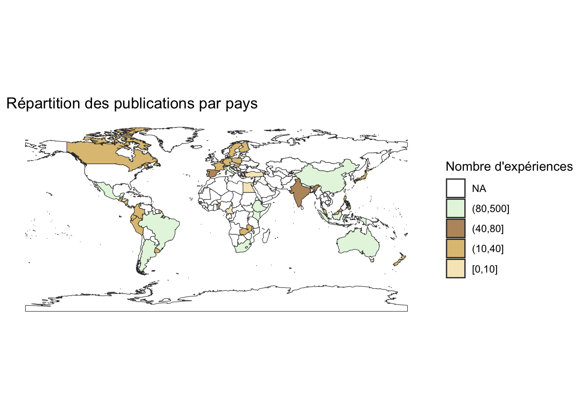

Chapter 11 Display the map
map_plot
### Example 2: Creating a Whitaker Plot
This example illustrates how to create a Whitaker plot using `ggplot2`.
``` r
# Install the plotbiomes package from GitHub (uncomment to install if not done yet)
# install.packages("devtools")
# devtools::install_github("valentinitnelav/plotbiomes")
# Load necessary libraries
library(plotbiomes)## Happy biome plotting!##
## Attaching package: 'raster'## The following object is masked from 'package:dplyr':
##
## select## The following object is masked from 'package:skimr':
##
## bindlibrary(ggplot2)
# Load temperature and precipitation raster data
path <- system.file("extdata", "temp_pp.tif", package = "plotbiomes")
temp_pp <- raster::stack(path)
names(temp_pp) <- c("temperature", "precipitation")
# Prepare spatial coordinates from Outcome dataset
coordinates <- cbind(as.numeric(Outcome$Lat_C), as.numeric(Outcome$Lat_T))
coordinates[is.na(coordinates)] <- 1 # Handle NA values
spatial_points <- SpatialPoints(coordinates)
# Extract temperature and precipitation values from the raster datasets
extractions <- raster::extract(temp_pp, spatial_points, df = TRUE)
# Adjust temperature values (WorldClim temperature data has a scale factor of 10)
extractions$temperature <- extractions$temperature / 10
# Convert precipitation from mm to cm
extractions$precipitation <- extractions$precipitation / 10
# Create a Whittaker base plot and add the temperature-precipitation data points
whittaker_base_plot() +
geom_point(data = extractions,
aes(x = temperature,
y = precipitation),
size = 3,
shape = 21,
color = "gray95",
fill = "black",
stroke = 1,
alpha = 0.5) +
theme_bw() +
labs(
title = "Temperature vs. Precipitation",
x = "Temperature (°C)",
y = "Precipitation (cm)"
)